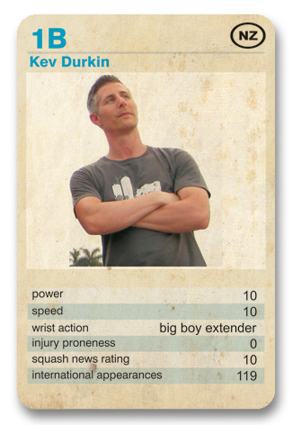

Although the racquet has changed, the legend of The Big Boy Extender lives on.
Chief Events Organiser at The Astra Dome, Creator and Editor of Squash News and with one of the most influential seats on the World Squash Senate, there is nothing that Kev Durks hasn't achieved within the game.
From humble beginnings on Auckland's Northshore, Kev learnt squash warrior techniques from a mysterious local Maori tribesman, who made Championship Standard squash balls from sheep's testicles.
Called upon on more than one occassion to play for The All Blacks, due in part to his explosive pace and immense physique, he has always resisted, claiming that he wanted nothing to stand in the way of a now glittering career in squash.
The consumate professional, Jahangir Khan has said of Durkin: 'He is the greatest player to have ever picked up a racquet'.
Factfile: Kev Durkin.
D.O.B: 30/09/1978
Strengths: Everything.
Weaknesses: None.
Hobbies: The history of The All Blacks, The Life and Work of Paul Weller, Business Time, Stalking Evangeline Lilly or the future Mrs. Durkin as she is otherwise known, Bending steel with his bare hands for no other reason than he can, Picking fights with Chuck Norris.